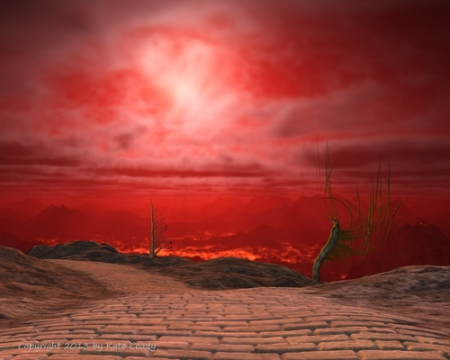

Salvage (Part 2)
by
Brett Davidson
There were dragons between the stars. Logic, had it been held, would had deduced their existence. Consider: the universe was old and surely some of its many stars harboured life. Why then had that life not spread throughout the entire galaxy? It had, but it was necessarily of a kind that could live in space itself. The philosophers who had asked the first question never considered what it was to travel through space; they had thought that travel was only a matter of arriving at destinations, but the sheer scale of space and the demands it made on life were too great to allow any sort to prosper except that which could accommodate itself to the dark and the cold and the long, long spans of time that passed between the stars. Thus were shaped the dragons of space. As any fish climbing out of the sea must make itself watertight, these masters of the void were quiet and dark.
This was not to say that they forgot warmth and light. On the contrary: they hungered for it, ravenously.
The first explorers to fall to the dragons must have wondered what they had awoken, but when more and more found themselves under attack, it became all too obvious that there was a very old established order among the stars. There was no doubt a very complex web of relations and fealties between the species of dragons, but they had this characteristic as their collective purpose: the bright, fast life borne of solid worlds was either their enemy or their prey.
How might that life appear to a dragon? They saw the hard, glaring points of the stars, stars that shouted, the force of their voices blasting great inhospitable cavities in the sky filled with nothing but chaos and noise and heat. From the necklaces of planets hung about these monsters, there would from time to time came something else: life. Planet-born life was even worse than a star, because when a star system was ripe, suddenly great clouds of it would burst forth like a premature nova. The electromagnetic mouths of their motive furnaces tore through them, disrupting the delicate cold patterns that they had made of themselves through the silent aeons of their existence. It was intolerable ... and so they attacked, and they ate and found for all the sharp bitterness of their appearance, the dense patterns of thought and soul contained within these spores were very sweet indeed.
And so the dark things were not merely dragons, they were Eaters.
The Sideromancer of Lachesis expected to have to enact the orders of his masters on earth and he expected to raise his armaments to fend off the Eaters of Light that besieged every ripe world. He did not expect to wander amongst the colonies and hear the sounds of their dying.
A dozen worlds now had cast out beams of coherent light in specified directions and he had followed them, reading them like long lines of text as he approached their origins only to hear them fall silent before he could make landfall. In every case, there were greetings, then boasts of prosperity, then expressions of hope, then requests for help and then, testimony ... and finally, before he was even able to see their crescents in his telescope, there was silence.
Falling to one world, he found it marred by a vast crater and a landscape of frozen ash. On the blasted surface, he was chased by eddies of shadow that took paths too orderly for them to be mere whirlwinds. He discovered that if he activated the intake field of his Castle's engine, they could be kept at bay for a while. Apparently they were another species of dragon adapted to planetary surfaces.
There was another colony that, as far as he could ascertain, was without record of war and yet had deliberately immolated itself barely a year before a great missile struck its surface. If they had such power at their disposal, why had they not simply diverted the bolide?
Something was also wrong with the parent star. It was dim, red, and prone to flares. His maps told him that it should have been bright and stable.
There was another colony, likewise scared and marked by a colossal impact. Its sun was likewise diseased. The coincidence was too suggestive.
There was a world where the citizens had somehow vitrified themselves to stand as perfectly detailed monuments amongst hordes of ravening shadows. They were strange and beautiful creatures, older and more graceful than humanity, but they were dead.
There was another world where the sun was entirely extinguished and the native race had remade themselves as patterns of conductivity in the clays and metallic oxides of their world's crust. When he found them after a long search, he named them "Ferromagnetics", but even their tremendous ingenuity had failed them and they too had succumbed to a dark sapping force.
In many cases, whole populations had destroyed themselves rather than to see their homes despoiled. If it were pride, it would be simple and admirable, but the repeated tendency marked a terror greater than pride.
He began to make lists and deduce patterns. This blight, he realised, was no mere ambient hazard; the Eaters of Light had the ambition and prevalence to engulf every human world, including the earth itself. On one hand, humanity possessed the weapons that could destroy them, but on the other they had numbers, time and, it seemed, some intrinsic bias in the nature of space itself to which they were naturally adapted whereas humanity was not. The balance was in their favour, but knowledge might tilt it towards humanity's side. Maybe the Eaters had succeeded in destroying every world they came across, but some surely must have delayed them for a time, and if he could find the means of even a few horai of successful defence on one world, a few more on another ... then hora by hora they might accumulate into the means of perpetual survival. Knowledge then was to be his harvest, and he was to return it to earth where it might be forged into the techniques of total war.
War, he thought, repeating the word over and over again. The truth was that he foresaw a war, the greatest war that would ever be fought. It would be a war for the cosmos itself between the creatures of light and darkness. This great Castle, equipped with artificial eyes to count the shells on a beach from high orbit and armed with force to shatter continents, was inadequate to the task. It was too small, too unsubtle. Upon his return he would urge the construction of a true warrior fleet. Every human, every living being would be enlisted to the battle because it would be their very way of life to fight the Eaters.
He gathered records up wherever he could and built a great library, learning from the compression techniques of the terminal cultures to add more and more knowledge to the Castle's eidognostic mills. One world yielded up an almost complete library, a grand treasury of art and literature. Its authors were not human, but there was an essential kinship in adversity and he learned to admire them. The style was fascinating, almost incomprehensible in its evolution and subtlety, but in the years that passed on his journey to the next mark on his charts, he had the time and the urge to decipher its contents. Eventually he was able to construct a sort of history through the forms of style and he was astounded. These beings were colonialists like humanity and it seemed that for a while their empire across the stars was more successful than that of his own race. Granted, their beginnings were rough and fragile, but as they grew ...
To begin with, the oldest articles were simple and spare, indicating a culture still developing its industrial base and perfecting the art of efficiency before it gained confidence and entered a more abstract phase that was refined, direct and clear. This was predictable and reassuring. The third stage showed a brief flowering of decadence, a movement that could mask either ennui or dread. That came too soon to be the result of ennui, however ... It was as if, facing a profound shock, the culture had fallen into utter despair.
The next stylistic mode was martial and strict; a remedy of sorts, but then that too came to its end.
The ultimate mode made a halting start from beginnings even more limited than the original foundation but then flowered to greatness and sophistication. That sophistication was sinister, however, because it indicated the maximum application of skill to the minimum of resources. He was forced to apply the most powerful algorithms of decompression to examples of this period to derive any meaning and sense of structure, but he was rewarded with glories.
The late language was fantastically elaborate as it was dissected, unfolded and mapped onto the standard structure-maps of his eidognostic lectors. In its pure form, the longest dialogues in this 'Set Speech', as it was called by its users, might have seemed like short exchanges of noise, utterly without redundancy and yet, when viewed as static diagrams the scripts were elaborately folded back on themselves, packed with meaning and varnished with layers of allusion.
But even these marvels were still the scripts of the dead. They told terrible tales: The Eaters fed not on such dense, indigestible stuff as matter, but the animating fluid of life itself. Their appetites were gluttonous, but their tastes — if such a term could be applied — were refined. They had a particular preference for beings that had a rich and complex consciousness, souls that could be encysted and digested over ages as they release their myriad flavours of experience. This, surely, was a form of destruction more terrible and permanent than any mere death.
The implications were clear. The empires of humanity and its predecessors were great trees that had grown among the stars, their cultures were their foliage and souls their fruit — and the Eaters were harvesting them.
Once this had been discovered, whole worlds chose to die in the hope of later incarnation rather than suffer such a fate. Individuals might live again an age hence if at all, and have only the barest hope of finding their beloved ones again unless some force brought them together across the spans of time. They said that there was such a gathering force. The Sideromancer could find no proof of it.
He sighed over his poisonous treasures. The sky that he measured with his sextant and telescopes was no longer the glittering, fertile vault that was depicted on his maps. It was now a vast charnel-house. Human beings and their cousins leapt up and were consumed and then their own homeworlds were destroyed. This had been the eternal rule, and the cause of the great silence that had mystified the ancient philosophers.
There were only meagre exceptions to the rule. Some of the dragons had made what could only be described as orchards. He approached as closely as he dared to one such world, and only briefly. Through scavenged techniques, he derived from his pattern-recognition algorithms a vision of a colony world where the entire surface was made over into a gigantic game board and milliards of people enacted a continual battle of sublime recursive complexity and absolute sterility. An image passed by an expendable spy device showed him all that he needed to know. It was the picture of a face, and the natural human intelligence behind it had been turned into nothing more than an intricate reflex system. The people here were vessels filled with the pure substance of experience and not one instant of individual thought so that they were like sweet berries to be plucked by the Eaters that hovered in shoals above them.
Could there have been any other means for people to survive? The Ferromagnetics had changed themselves and died nonetheless, but others might have succeeded, he reasoned. There was one subjugated colony and much-altered but recognisably human people were still alive there. He hoped that perhaps a rescue and rehabilitation for these remnants might be possible, but when he tried to classify the Eaters endemic there, he found that they bore too close a similarity to the patterns of human souls. Had they adapted to become like humans — or had certain humans become like Eaters and now preyed upon their former siblings? He fled the answer.
In the years that passed between his stops, he brooded on his discoveries. There were thousands of other flying castles similar to his own and their masters must have been drawing similar conclusions. If they had not, he dared not broadcast a warning lest he alert the Eaters to the extent of human domain.
Salvage was his duty, he reminded himself. Whatever shame he felt as a paladin who fled threats, it was his supreme duty to arm the earth with knowledge. Concern for anything less when the stakes were so absolute would be treason.
There came times when he was forced to fight for survival in the most direct way. Every year or less, alarums would sound, waking him from his hypothermic sarcophagus to confront a black swarm of Eaters.
And the personal combat that this entailed brought with it a very personal sorrow. The Sideromancer was forbidden to leave the helm of his Castle in time of combat and so the soldiers that sallied out to fight were selected from the ranks of his sleeping companions. Therefore, as soon as he confirmed his position in the observatory, he was required to set his mills in motion to select a champion and to send them out in an agile Lighter-capsule charged with the energies known to be deadly to the Eaters. This he did with the serial release of five seals. The first confirmed his attention, the second the ability of the Castle to deploy the capsule. This time, as it always did, his finger hesitated over the third. The selection was not by his will, but by mechanical lottery and it was the sliver of chance that he dreaded even more than his destruction.
There was one person in the hibernaculum, their name concealed by a number, whom he wished he would never let out, never select to risk her life for his own, but the lottery of selection was contrived to ensure that there was always a chance that this might be the case. He trembled then in randomising his selection, wishing that it were he whose life lay under another's thumb. All had taken their oaths of fealty and trust, even he.
He summoned a view of the hibernaculum and stared at the ranks of sarcophagi, their black shells uniformly velvet with frost. There was no way to tell them apart without breaking a seal he was sworn never to break. Whatever mix of fear, dread and love might drive him, he could not break his word without breaking his soul. He pressed the stud that released the third seal.
Somewhere the wheels of a simple calculator mill spun and came to their conclusion.
The fourth seal warmed the champion to a state near consciousness. Subtle chemical and electrical alerts were relayed through the blood and nerves of the sleeper. Dials flickered, a light changed to the alert colour of jale, barely visible on the edge of violet. The sleeper was now a dream-warrior, an oneiromachist.
No-one fully awake could fight; their consciousness would shine too bright and hot, the could not slip by the Eaters unnoticed and make their crucial feints. Many lives had been wasted learning this.
But then, no dreamer could fight alone, and so the Sideromancer leaned over his charts and moved his pieces and the dreamers slipped and danced about the black-on-black beings and thrust daggers into their insubstantial flesh almost like whimsies under his provocation.
He allowed himself some guilt, believing it to be a bracing penance. Some Lighters had died, never woken from their nightmares or had been swallowed up by the Eaters to know unknowable tortures as their souls were digested. Had his fingers danced as well as the Lighters, then he thought that they might have been saved.
Was it her now? Was it her a dozen battles before? Would it never be her? Was there the infinitely small but real chance that it was her every time?
He would never know. He must not. He only hopes that her dreams were pleasant, and if they were battles with real monsters, then she remembers them as things barely perceived at the very rim of recollection or forgotten altogether. If only his fears were so easily mislaid too ...
The Sideromancer set his jaw firmly. There was no compromise, only stark circumstance. His ancestors had declared sovereignty over a field where in fact they were pest and prey.
He released the fifth seal. There was a hiss, a release of vapour and the sarcophagus slid from its port and proceeded along a rail to the Lighter-capsule charging bay. The trifling matter of his life was now in the hands of the dreamer, the Lighter.
Out now in open space, the Lighter stirred. In her dreams, she felt acid breath upon her neck. The Eaters swarming about the Castle were inching closer and one had leant into the stream feeding the Castle's engine. It risked being caught and consumed by the vast magnetic funnel, but it smelled the rich hoard of life nested within the Castle, and in its way, it panted, it slavered. It leaned a little closer ... and the Lighter twitched. Reflexively, the Sideromancer's hand clenched.
About the command chamber, lights turned to amber. Something hummed and ice cracked. The Sideromancer withdrew. His place now was in the chart room, to make the grid that would be the Lighter's game board. Always, reciting the lines of his confession and justification reminded himself of the dangers risked by the Lighter as he manipulated his charts and tables. Ah, a dream of dark mists and thin winds, and suddenly, a hot dense torrent and consuming death, and far away, the hoped-for bright harbour of a new sun. So gentle, so sly, so lethal. This was the sublime terror and promise of space, something that had never been understood as anything other than a mathematical abstraction in the warm enclosure of earth.
The battle began. Like all battles of this kind, it was a gladiatorial duel fought in a manner that was half the advanced geometry of lines intersecting in hyperbolic topology and half the attempt of minds trying to infect each other through persuasion so earnest that it was lethal. Machines understood and translated the topology underlying the Sideromancer's strategies, but the rest relied on the intuition of the Lighter. It was a delicate balance indeed: if she understood too well, then her soul would be unveiled to the dragons and be sorbed by them, but if she understood too little, then she would not even be able to discern the shadows from black space and one of them would take her in one bite — or whatever it was that they did when they ate.
Wrapped in sleep, the Lighter imagined that she dreamed and thus was able to fly out among these Eaters, and it was the logic of dreams that made the necessary cognitive links for action. She accepted, she reacted, but the dream told her of a state far away from this arena. The Sideromancer had no idea what dreamworld the Lighter inhabited; perhaps she was on a green field chasing butterflies or the bridge of a circling city staring into the eternal sunset. Perhaps she even dreamed that they were in interstellar space fighting shadows and smiled because she knew that this was only a dream.
In any case, the Sideromancer made his chart like a spider web twisted into a complicated helix and the spark of the Lighter's capsule flew about it. Here and there, rosy glows flickered as she transfixed a dragon in a lance of coherent light and killed it. Once, there was a flash as a dragon was caught in the electromagnetic vortex of the Castle's engine intake. In an instant it was torn apart and digested by the false sun at its centre. The Castle shuddered, the sun flickered and almost died, but it returned to stability and cast the subatomic remnants of the dragon backward at an appreciable fraction of the velocity of light. In long waves, he heard the thing's inhuman screams.
Suddenly, the attackers were dispersed. The Castle and its cargo of sleepers were safe for now.
"Victory," the Sideromancer whispered to himself, knowing that it was only one of a thousand necessary battles, but allowed himself at least this sliver of satisfaction, all the sweeter for being, in an instant, timeless. He looked up from his chart and into the eyes of a stranger and gasped.
The man was like no other man he had ever seen; tall, almost a giant, his skin was porcelain-pale and his eyes as black as tears in the sky. Dim green light seemed to be reflected in their depths; as if he were a cat, as if he beheld other landscapes lit by a strange sun.
"Lines are converging," said the stranger.
Again the cot, again the aches and the shame and the hopeless, sick despair at the limits of her body and her world and the rotting sky. She cried out until her throat was raw. Fury was such a perfect aid to forgetting, but even that subsided. She grabbed a book at random and scanned the catalogue of stellar exploration and tried to immerse herself in it, but even that was fruitless. Of course they were all there — the Ferromagnetics and the others. And all of the entries were written in the past tense, and this was the present. All of the wonderful beings were described as if they were extinct.
She threw the book down and glared at the wall, but she was too old for sulks and felt absurd. Tears were perhaps permissible at any age, but she was too angry to cry. A boy would punch the wall perhaps, or pick a fight, but she, a girl and an invisible girl at that, had no options. Picking up the entekora, she fidgeted with it, wishing that she could turn herself inside out too, hiding her face behind another imago. She mumbled the names of a few of its faces — Meyr, Lyreia, Mira ...
That man! She remembered then. He was familiar. Like the Ferromagnetics, the So-la-si, he was recorded and in his case, it was in her own living memory ...
Someone was standing by her. She knew already who it was: Medeis.
He was watching silently, his lips pursed. She knew what he would say, so there was no need for him to say it: You should not have been ... If that man had not ... You could have ... It was a miracle that ...
All true. He feared for her, and she hurt him. Her rebellions had been exquisitely designed to do just that when she was younger, but for such a vulnerable seeming man, he showed an astonishing capacity to wear out her anger, as he did now. "I'm sorry," she whispered. "I'm not sure I meant to ... not entirely ... "
"That was progress at least. I could only applaud this latest increase in your incompetence and lack of commitment."
"Well there had to be something about me that was normal," she said, trying to carry the tone.
"Ah, almost a joke — in a dekaphaos I predict the manifestation of genuine humour!"
"Aaahh ... " she relaxed back against the bedding. "So I am lucky to be well and lucid for another few horai ... "
Medeis, as he always did, took notes and assembled thereby a narrative of her vision. He was enough of an historian to know that the story she related, though unverifiable in its details, broadly conformed to the history of earth's empire of stars and the castles that maintained it. It was, for all its wonder and horror, of no real use to the historians though — how could they ever confirm any of it?
In a more practical mode however, there were times when a direct view of the past was useful if, for example, a previously unseen treasure could be traced. Attribution would have a light weight compared with a handful of gold or some example of antique technology regained ... but her visions were painful and ungovernable. Their insights were incidental to the diagnosis and amelioration of her epilepsy, which was itself determined to be 'mere' side effect of her visions. He could not in any case be so mercenary when he saw how much she suffered.
She sometimes admitted to herself when the nausea was an abstract memory, when the battles of the Sideromancer were remote, that the opening of her horizons was a good thing. The past was a whole world of broader plains than any that existed on earth. The vistas of time were a gift ... but then the she smelled roses, and felt the crinkling of the air and the here-it-comes happened and she felt again the helplessness and the terror and the hate.
Time passed and the fits came more and more often. Sometimes she found herself leaning against a wall, a minute or less having passed and no new memories beyond a glimpse of corridor or a star caught in the reticle of a telescope. Other times ...
There was nothing that could be done, and no one could live every moment waiting for the next occurrence, so she lived as she could, working in the Monstruwacans' library, climbing spiderlike about the stacks and ladders. If she had a fit and fell, spraining an ankle, then she sorted files at a desk for a diphaos and hobbled for a dekaphaos or two pushing a trolley. It was a busy time, the season of the Hiatus, and she was particularly busy searching for references for speeches, designs for costumes, recipes, a poem, an oratorio, a template for a font ... whatever it was that caught the fancy of someone or other. She hardly minded, or even thought that what she did was trivial. She was a reader, and like all readers, appreciated the serendipitous finds of novel texts in the course of fulfilling an odd request. She was often reluctant to pass the books on and her cubby was cluttered with volumes about fish that lived in the earth current and other marvels that she was meaning to deliver or file eventually.
Consider: creatures that lived in a vegetable phase through most of their life cycle and then metamorphosed into animal-flowers that fought and mated with counterparts from rival moss-hives or even infiltrated those parent masses and replaced their natural offspring. Collectors would build enclosures with several moss-hives and watch them wage long wars with each other. She wondered if in a museum in this or another creeping city there might be some stored seeds.
And so on.
And the aquiline face of the man who said that lines were converging followed her. If he was in the Castle, then when she had the chance ... and until then she could only wait here.
Though she would not admit it, the scanning of marvels had become a routine, and she was becoming more and more frustrated at reading only of the past. One chrysophaos there came a file that was in no way routine. It was a treatise on technological means of prognostication, another serendipitous find that attracted her notice because of its flagging as most secret. That warning was of course completely irresistible. She waited until the very depth of hesperophaos and tuned the print down to barely visible dimness and began to read.
Under the emblem of a clock with a spiral dial, she learned of the dispute between the Heliomancers and the Monstruwacans on the efficacy of their respective methods of prognostication.
The Heliomancers' technique was, logically enough considering their wider practice, based on the observation of angles and trajectories that were ground to exceedingly fine fractions in their calculating mills. The fundamental flaw was that they could only derive the predictions from what they already know. Many, seeing the product of processed data, wish that they knew less. Among the dimming stars, the signals of the flying castles had flickered and died for millennia until the merest handful of sparks remained, and then they too had been extinguished. The last to survive — barely — was the one that was now a ruin across the landing-field. There were obscure but hungry forces abroad in the sky, the sun was sapped by invisible worms, the planets were slowing in their rotation and crumbling as their essential binding energy was consumed somehow. Somehow, something was even consuming the binding force of the universe itself, letting the stellar nebulae recede more and more quickly from one another. The heavens were a feast for things that flew in the night, invisible worms jealous of warmth and life itself.
This, of course, she already knew. It gave her no pleasure to read it here, except to feel reassured that her spells of madness arose from some seed of truth. She read on:
Making a chart of their census, the Heliomancers had made some logical deductions that point to what they thought was an inevitable end. That date lay far in the future yet with the final stall and extinction of the sun.
A picture showed a Heliomancer cranking a handle on the side of a drum, spinning the gears inside the calculating mill. Symbols flashed past each other in the tiny readout windows, making strange momentary juxtapositions. Various adjusted epicyclic wheels, sped and slowed internal rings, stalling some and advancing others. Finally the whole contraption came to a halt and the Heliomancer adjusted a prism to let a beam of sunlight into its kaleidoscopic volume. He peered through the central eyepiece, imposed a grammar upon the symbols, made sentences and read: The sun is a king, Sol Invictus. He is challenged by a child. Nodding his head, he passes his sceptre to her hand.
He repeated the cycle and another and there was another sequence to be read: there is in night, a crown about a rose. It flies upward, and then it completes the necessary symmetry of its arc and falls once more.
That was all. Io let the picture run through its cycle a few more times.
It was easy to guess what he might have been thinking if he were a real man and not a fictive convenience for the sake of illustration. He would be scandalised if he had been of a more ancient generation, but as a contemporary man he would know that the sun was dying. He would have felt a new pang of dread every time he saw the prediction of its doom, but for the first time now he might feel hope. If only he knew what the emblems meant. Was the child a new sun? Another star came from far away? Was the rose and crown a gift from out of the past, invested in its flight so that it might deliver a bounty back to earth, or was it a failure?
A little grim, a little hopeful. The Monstruwacan divinations were less ambiguous and even more confusing.
There was a technique that they had devised by which the future could be seen as if through a spy-glass. The intrinsic flaw was that all possible futures spreading like a fan from a single moment were revealed, with the result that only the most immediate and only the most probable could be seen in the blazing welter of information. In this case, however, the fan was narrow, and becoming narrower.
There were certain possible causes for this, the author of the report reasoned. The first was that somehow, some element of the future had appeared in the present time, leading to a bias toward those histories/story-lines that lead to a specific endpoint. A corollary of that was that history itself, in all its possibilities, had ended the stage of sowing and was now entering the stage of harvest. As the farm vehicles were drawn into the fore-ramps of the city, so the lines of history were turning now to direct themselves toward some ultimate nexus.
Another implication of this was that some colossal pressure of imminent events would allow fewer and fewer possibilities until only one destiny remained. There was to be a moment of clarity soon, where all would become clear, and that moment by definition was a catastrophe.
The next chrysophaos, Medeis took her gently by the elbow and led her to the library car's vanguard balcony. "I know that you have been reading," he informed her quietly. "Secret books tell secrets themselves, you know. The book alerted me and I was concerned about the consequences of the dissemination of its contents until it told me that it was being read by one Foundling Io. Fortunately you keep secrets almost as well as the best of our adepts."
"That's because everyone thinks that I am crazed, Medeis. There's no point in talking."
"Hmph. You do often mutter to yourself, I've noticed."
"Is it true then?"
"That you mutter? Yes."
She jabbed an elbow into his ribs. "That there will be a catastrophe?" she asked.
Medeis shrugged. "It will be true when it has happened. Currently it is likely."
"Why?"
"We don't know."
"Does Nobody know?"
"Even Nobody does not know."
Io chewed on this a while. "You said that there was a pattern," she ventured at last.
"Did I?"
"To my affliction. You suggested that my seizures were increasing in number and severity the closer we came to the ruined Castle. Is that pattern linked with the other pattern?"
He sighed deeply and spread his hands. "It seems that time is engaged in a conspiracy with your visions of the past and our intimations of the future. What the nature of that conspiracy is, we simply do not know. For your sake as much as our own seemingly tenuous survival, I wish that we knew, but we do not."
"Except that the Castle might be significant."
"What may be may not be—"
"But you're going to investigate?"
"Yes, we are," he admitted guardedly and raised a warning finger. "You are not to participate, not this time. If it is the cause of your effects, we will not risk exacerbating them."
"Hmph," she grunted and folded her arms tight. It was not a sulk; she simply decided to keep her own counsel. And she had already decided that she certainly would explore the Castle.
© 2006 by Brett Davidson.
Image © 2015 by Kate Coady.